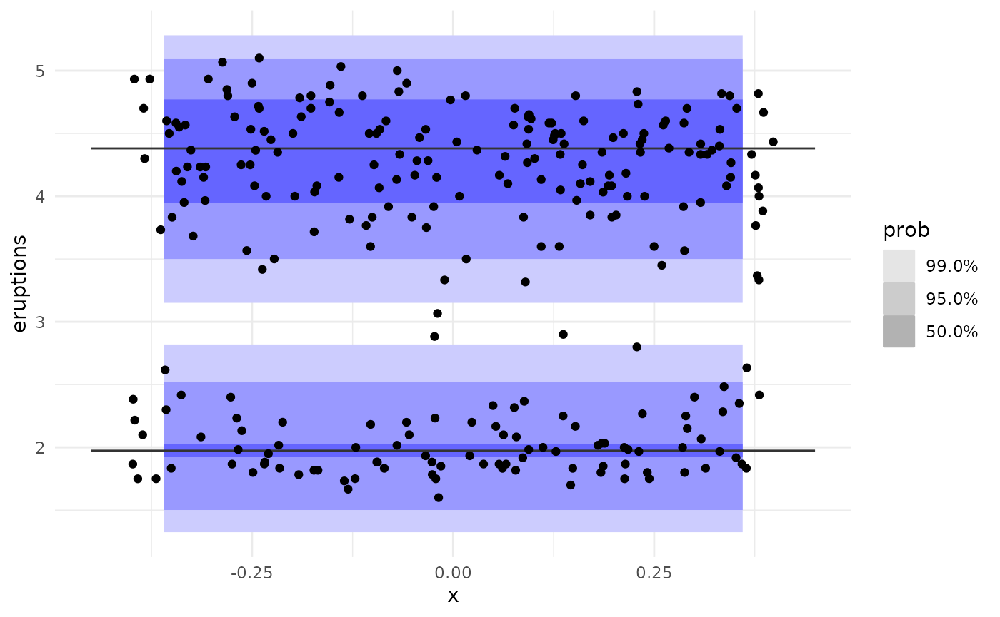
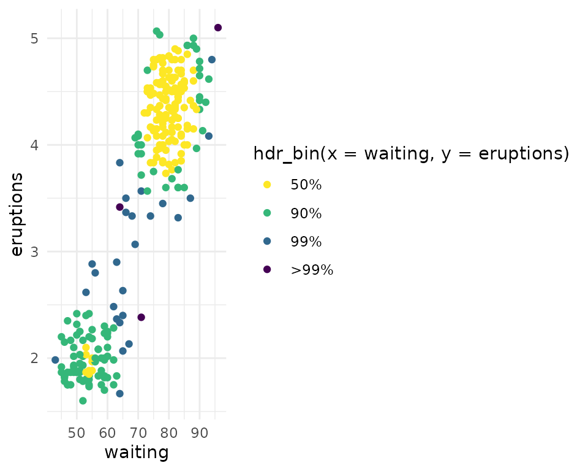

The gghdr imports the hdrcde package and provides tools for plotting highest density regions with ggplot2.
The following vignette assumes familiarity with the grammar of graphics as implemented in ggplot2.
Introduction: the limitations of a boxplot
Let's begin by using ggplot2 to create a boxplot of the eruptions variable of the faithful dataset, built into the hdrcde library.
In a standard boxplot:
- The central box is bounded by Q1 and Q3, which represents the interquartile range.
- The whiskers extend from Q1 - 1.5 (Q3 - Q1) to Q3 + to 1.5 (Q3 - Q1), which represents 99% coverage for large samples.
- Finally, the horizontal line represents the median.
library(ggplot2) library(hdrcde) # we will set the ggplot2 theme to use theme_minimal() for the vignette theme_set(theme_minimal()) ggplot(data = faithful, aes(y = eruptions)) + geom_boxplot()

# fixme? show the interquartile range with labels on the plot
If we look more closely at our data, however, we can see that it's actually multimodal, but our choice of visualisation technique limited our ability to see this:
ggplot(data = faithful, aes(x = eruptions)) + geom_density()

High-density regions (HDRs) enable us to effectively summarise and visualise multimodal datasets
The hdrcde package is an R package that allows us to address this. It provides a way of calculating and visualising so-called high-density regions (HDRs), which can intuitively be understood as boxplot-like plots, with darker boxes showing regions of higher data density. For example, a light rectangle might be used to show the region in which over 99% of the data is contained, whereas a smaller, darker rectangle would highlight a region within that which contains the most closely co-localised 50% of the dataset.
Formally, HDRs are defined in the following manner (Hyndman 1996 American Statistician, 50, 120-126):
If \(f(x)\) is the density function of a random variable X, then the \(100 (1 -\alpha)\) HDR is the subset R(\(f_\alpha\)) of the sample space of X such that \(R(f_\alpha) = \{x: f(x) \geq f_\alpha\}\), where \(f_\alpha\) is the largest constant such that Pr(X \(\in R(f_\alpha)) \geq 1-\alpha\))
The hdrcde package provides tools for computing these highest density regions in one and two dimensions, kernel estimates of univariate density functions conditional on one covariate, and multimodal regression.
We can use this package to create a density plot of the eruptions variable.

- 50% of the dataset is "located" in the regions shown by the darkest blue rectangles/dashed lines
- 95% of the dataset is "located" in the regions shown by the blue rectangles/dashed lines
- 99% of the dataset is "located" in the regions shown by the light blue rectangles/dashed lines
This can be visualised more compactly using the hdr.boxplot function, in which:
- The region bounded by the interquartile range is replaced by 50% HDR (dark blue)
- The region shown using the whiskers is replaced by the 99% HDR (light blue)
- The horizontal line represents the mode
hdr.boxplot(faithful$eruptions, prob = c(99, 95, 50), col = c("skyblue", "slateblue2", "slateblue4"))

hdr.boxplot() uses base plotting tools to create the visualisation, limiting users' ability to customise and combine it with other ggplot2 visualisations.
HDR boxplots in ggplot2: geom_hdr_boxplot()
We can visualise the same dataset using geom_hdr_boxplot(). By default, it will plot respectively darker boxes for 99%, 95% or 50% of the data.
library(gghdr) ggplot(data = faithful, aes(y = eruptions)) + geom_hdr_boxplot()
Adding colour
We can specify the base colour we'd like to use.
ggplot(data = faithful, aes(y = eruptions)) + geom_hdr_boxplot(fill = c("blue"))
Specifying your own probabilities
We can also specify which set of probability coverages we'd like to display HDRs for. For example, we can visualise the 25%, 50%, 75%, 95%, and 99% HDR of the faithful eruptions.
ggplot(data = faithful, aes(y = eruptions)) + geom_hdr_boxplot(prob = c(0.25, 0.5, 0.75, 0.95, 0.99), fill = c("blue"))

We can also specify the probabilities as percentages, i.e. out of 100.
ggplot(data = faithful, aes(y = eruptions)) + geom_hdr_boxplot(prob = c(25, 50, 75, 95, 99), fill = c("blue")) #> Warning: Probability values should be on a scale between 0 to 1. If not, #> values will be converted to decimal values.

This will produce a warning, but achieve the same result. Note that mixing the two will result in all of your probabilities \(\leq1\) being divided by 100.
ggplot(data = faithful, aes(y = eruptions)) + geom_hdr_boxplot(prob = c(2.55, 50, 75, 95, 99), fill = c("blue")) #> Warning: Probability values should be on a scale between 0 to 1. If not, #> values will be converted to decimal values.
Combining geom_hdr_boxplot() with geom_jitter() to visualise both the raw data and HDRs
We can combine all sorts of ggplot2 geoms with geom_hdr_boxplot(). For example, we can use geom_jitter() to showcase the underlying data.
ggplot(data = faithful, aes(y = eruptions)) + geom_hdr_boxplot(fill = c("blue")) + geom_jitter(aes(x = 0))

Combining geom_hdr_boxplot() with geom_rug() to visualise the HDRs and distribution of the data
We can use geom_rug() to show this distribution in the margin along the y axis.
ggplot(data = faithful, aes(y = eruptions)) + geom_hdr_boxplot(fill = c("blue")) + geom_rug()
Marginal HDRs are supported with geom_hdr_rug()
Inspired by this feature of geom_rug(), we provide geom_hdr_rug(), which enables us to plot HDRs in the margins of other plots.
ggplot(data = faithful, aes(x = waiting, y = eruptions)) + geom_point() + geom_hdr_rug(fill = "blue")
geom_hdr_rug() supports multiple probability specifications, just like geom_hdr_boxplot(). It expects probabilities between 0 and 1, but, similarly to geom_hdr_boxplot(), it will complain but accept probabilities between 0 and 100.
ggplot(data = faithful, aes(x = waiting, y = eruptions)) + geom_point() + geom_hdr_rug(prob = c(10, 20, 50, 99), fill = "blue") #> Warning: Probability values should be on a scale between 0 to 1. #> If not, values will be converted to decimal values.

Grouped HDR boxplots
One of the most exciting features geom_hdr_boxplot() supports (unlike hdr.boxplot) is the ability to create separate HDR boxplots for different groups in a dataset. We use ggplot2's native syntax to do this. Let's explore the ggplot2::mpg dataset. First, let's look at a histogram of the data, faceted by number of cylinders
ggplot(data = mpg, aes(x = hwy, fill = as.factor(cyl))) + facet_grid(as.factor(cyl)~.) + geom_histogram(bins = 50)

We can see that cars with 6 cylinders seem to be bimodally distributed. As expected, geom_hdr_boxplot() nicely shows us both modes in the data.
ggplot(data = mpg, # make sure to change x to y from geom_density to geom_hdr_boxplot aes(y = hwy, fill = as.factor(cyl))) + geom_hdr_boxplot()

Scatterplots with HDR information
gghdr provides the hdr_bin() function for annotating data with the HDR they fall under. Providing this to the colour aesthetic produces scatterplots with the HDR information.
ggplot(data = faithful, aes(x = waiting, y = eruptions)) + geom_point(aes(colour = hdr_bin(x = waiting, y = eruptions))) + scale_colour_viridis_d(direction = -1)

Feel free to combine this with a rug for more gghdr goodness.
ggplot(data = faithful, aes(x = waiting, y = eruptions)) + geom_point(aes(colour = hdr_bin(x = waiting, y = eruptions))) + geom_hdr_rug() + scale_colour_viridis_d(direction = -1)